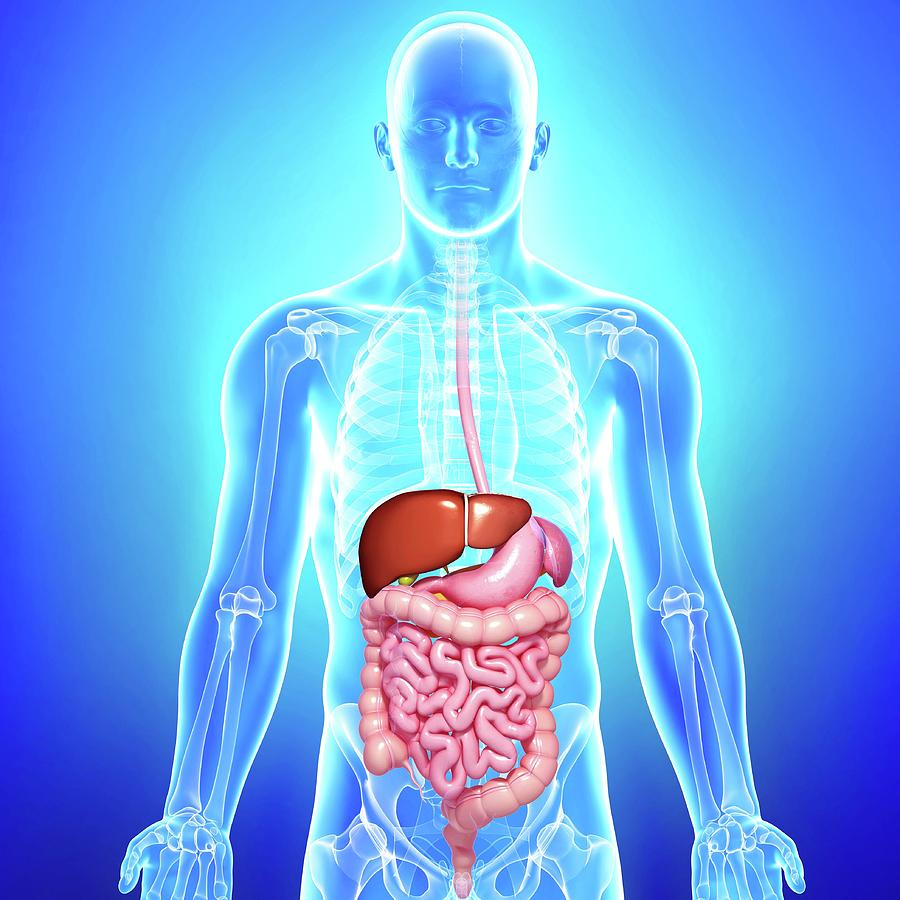

Human Nutrition
From Wikipedia - The Free Encylopedia

Human nutrition deals with the provision of essential nutrients in food that are necessary to support human life and good health.[1] Poor nutrition is a chronic problem often linked to poverty, food security, or a poor understanding of nutritional requirements.[2] Malnutrition and its consequences are large contributors to deaths, physical deformities, and disabilities worldwide.[3] Good nutrition is necessary for children to grow physically and mentally, and for normal human biological development
The seven major classes of nutrients are carbohydrates, fats, fiber, minerals, proteins, vitamins, and water.[4] Nutrients can be grouped as either macronutrients or micronutrients (needed in small quantities). Carbohydrates, fats, and proteins are macronutrients, and provide energy.[5] Water and fiber are macronutrients but do not provide energy.[6] The micronutrients are minerals and vitamins.[7]
The macronutrients (excluding fiber and water) provide structural material (amino acids from which proteins are built, and lipids from which cell membranes and some signaling molecules are built), and energy. Some of the structural material can also be used to generate energy internally, and in either case it is measured in Joules or kilocalories (often called "Calories" and written with a capital 'C' to distinguish them from little 'c' calories). Carbohydrates and proteins provide 17 kJ approximately (4 kcal) of energy per gram, while fats provide 37 kJ (9 kcal) per gram,[8] though the net energy from either depends on such factors as absorption and digestive effort, which vary substantially from instance to instance. Vitamins, minerals, fiber,[9] and water do not provide energy, but are required for other reasons. A third class of dietary material, fiber (i.e., nondigestible material such as cellulose), seems also to be required, for both mechanical and biochemical reasons, though the exact reasons remain unclear. For all age groups, males on average need to consume higher amounts of macronutrients than females. In general, intakes increase with age until the second or third decade of life.[10]
Some nutrients can be stored – the fat-soluble vitamins – while others are required more or less continuously. Poor health can be caused by a lack of required nutrients, or for some vitamins and minerals, too much of a required nutrient. Essential nutrients cannot be synthesized by the body, and must be obtained from food. Molecules of carbohydrates and fats consist of carbon, hydrogen, and oxygen atoms. Carbohydrates range from simple monosaccharides (glucose, fructose, galactose) to complex polysaccharides (starch). Fats are triglycerides, made of assorted fatty acid monomers bound to a glycerol backbone. Some fatty acids, but not all, are essential in the diet: they cannot be synthesized in the body. Protein molecules contain nitrogen atoms in addition to carbon, oxygen, and hydrogen.[11] The fundamental components of protein are nitrogen-containing amino acids, some of which are essential in the sense that humans cannot make them internally. Some of the amino acids are convertible (with the expenditure of energy) to glucose and can be used for energy production just as ordinary glucose, in a process known as gluconeogenesis. By breaking down existing protein, some glucose can be produced internally; the remaining amino acids are discarded, primarily as urea in urine. This occurs naturally when atrophy takes place, or during periods of starvation.[citation needed] The list of nutrients that people are known to require is, in the words of Marion Nestle, "almost certainly incomplete".[12]Contents
- Carbohydrates
- Nutrients
- Vitamins
- Amino Acids
- Water
- Fiber

Carbohydrates
Carbohydrates may be classified as monosaccharides, disaccharides or polysaccharides depending on the number of monomer (sugar) units they contain. They are a diverse group of substances, with a range of chemical, physical and physiological properties.[13] They make up a large part of foods such as rice, noodles, bread, and other grain-based products,[14][15] but they are not an essential nutrient, meaning a human does not need to eat carbohydrates.[16] The brain is the largest consumer of sugars in the human body, and uses particularly large amounts of glucose, accounting for 20% of total body glucose consumption.[17] The brain uses mostly glucose for energy; if glucose is insufficient however, it switches to using fats.[18] Monosaccharides contain one sugar unit, disaccharides two, and polysaccharides three or more. Monosaccharides include glucose, fructose and galactose.[19] Disaccharides include sucrose, lactose, and maltose; purified sucrose, for instance, is used as table sugar.[20] Polysaccharides, which include starch and glycogen, are often referred to as 'complex' carbohydrates because they are typically long multiple-branched chains of sugar units. Traditionally, simple carbohydrates were believed to be absorbed quickly, and therefore raise blood-glucose levels more rapidly than complex carbohydrates. This, however, is not accurate.[21][22][23][24] Some simple carbohydrates (e.g., fructose) follow different metabolic pathways (e.g., fructolysis) that result in only a partial catabolism to glucose, while, in essence, many complex carbohydrates may be digested at the same rate as simple carbohydrates.[25] The World Health Organization recommends that added sugars should represent no more than 10% of total energy intake.[26] The most common plant carbohydrate nutrient – starch – varies in its absorption. Starches have been classified as rapidly digestible starch, slowly digestible starch and resistant starch.[27] Starches in plants are resistant to digestion (resistant starch), but cooking the starch in the presence of water can break down the starch granule and releases the glucose chains, making them more easily digestible by human digestive enzymes.[28] Historically, food was less processed and starches were contained within the food matrix, making them less digestible.[29] Modern food processing has shifted carbohydrate consumption from less digestible and resistant starch to much more rapidly digestible starch.[30][31] For instance, the resistant starch content of a traditional African diet was 38 grams/day.[32] The resistant starch consumption from countries with high starch intakes has been estimated to be 30-40 grams/day.[33] In contrast, the average consumption of resistant starch in the United States was estimated to be 4.9 grams/day (range 2.8-7.9 grams of resistant starch/day).[34]
Nutrients
The seven major classes of nutrients are carbohydrates, fats, fiber, minerals, proteins, vitamins, and water.[4] Nutrients can be grouped as either macronutrients or micronutrients (needed in small quantities). Carbohydrates, fats, and proteins are macronutrients, and provide energy.[5] Water and fiber are macronutrients but do not provide energy.[6] The micronutrients are minerals and vitamins.[7] The macronutrients (excluding fiber and water) provide structural material (amino acids from which proteins are built, and lipids from which cell membranes and some signaling molecules are built), and energy. Some of the structural material can also be used to generate energy internally, and in either case it is measured in Joules or kilocalories (often called "Calories" and written with a capital 'C' to distinguish them from little 'c' calories). Carbohydrates and proteins provide 17 kJ approximately (4 kcal) of energy per gram, while fats provide 37 kJ (9 kcal) per gram,[8] though the net energy from either depends on such factors as absorption and digestive effort, which vary substantially from instance to instance. Vitamins, minerals, fiber,[9] and water do not provide energy, but are required for other reasons. A third class of dietary material, fiber (i.e., nondigestible material such as cellulose), seems also to be required, for both mechanical and biochemical reasons, though the exact reasons remain unclear. For all age groups, males on average need to consume higher amounts of macronutrients than females. In general, intakes increase with age until the second or third decade of life.[10] Some nutrients can be stored – the fat-soluble vitamins – while others are required more or less continuously. Poor health can be caused by a lack of required nutrients, or for some vitamins and minerals, too much of a required nutrient. Essential nutrients cannot be synthesized by the body, and must be obtained from food. Molecules of carbohydrates and fats consist of carbon, hydrogen, and oxygen atoms. Carbohydrates range from simple monosaccharides (glucose, fructose, galactose) to complex polysaccharides (starch). Fats are triglycerides, made of assorted fatty acid monomers bound to a glycerol backbone. Some fatty acids, but not all, are essential in the diet: they cannot be synthesized in the body. Protein molecules contain nitrogen atoms in addition to carbon, oxygen, and hydrogen.[11] The fundamental components of protein are nitrogen-containing amino acids, some of which are essential in the sense that humans cannot make them internally. Some of the amino acids are convertible (with the expenditure of energy) to glucose and can be used for energy production just as ordinary glucose, in a process known as gluconeogenesis. By breaking down existing protein, some glucose can be produced internally; the remaining amino acids are discarded, primarily as urea in urine. This occurs naturally when atrophy takes place, or during periods of starvation.[citation needed] The list of nutrients that people are known to require is, in the words of Marion Nestle, "almost certainly incomplete".[12]
Vitamins
Except for vitamin D, vitamins are essential nutrients,[55] necessary in the diet for good health. Vitamin D can be synthesized in the skin in the presence of UVB radiation. (Many animal species can synthesize vitamin C, but humans cannot.) Certain vitamin-like compounds that are recommended in the diet, such as carnitine, are thought useful for survival and health, but these are not "essential" dietary nutrients because the human body has some capacity to produce them from other compounds. Moreover, thousands of different phytochemicals have recently been discovered in food (particularly in fresh vegetables), which may have desirable properties including antioxidant activity (see below); experimental demonstration has been suggestive but inconclusive. Other essential nutrients not classed as vitamins include essential amino acids (see above), essential fatty acids (see above), and the minerals discussed in the preceding section.[medical citation needed] Vitamin deficiencies may result in disease conditions: goiter, scurvy, osteoporosis, impaired immune system, disorders of cell metabolism, certain forms of cancer, symptoms of premature aging, and poor psychological health (including eating disorders), among many others.[71] Excess levels of some vitamins are also dangerous to health. The Food and Nutrition Board of the Institute of Medicine has established Tolerable Upper Intake Levels (ULs) for seven vitamins.[72]